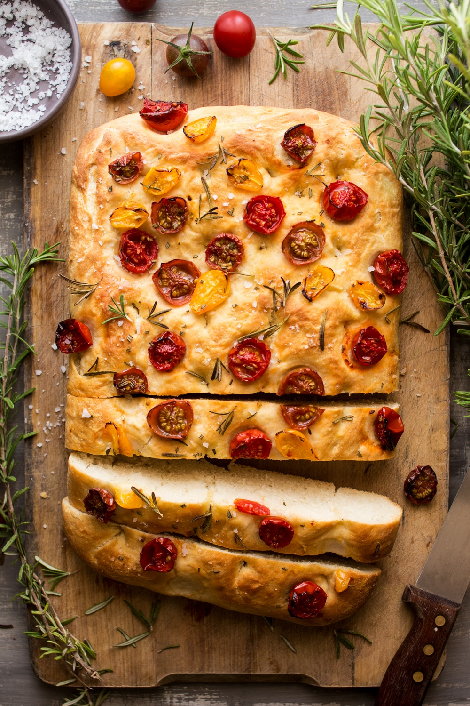

Focaccia Bread

Ingredients
- 500g bread flour
- 7g active dry yeast
- 10g salt
- 2 tbsp olive oil
- 300ml warm water
- 1-2 sprigs fresh rosemary, chopped
- Sea salt flakes, for topping
- Additional olive oil, for drizzling
Instructions
- In a large mixing bowl, combine the bread flour, yeast, and salt.
- Add the olive oil and warm water to the flour mixture. Mix until a rough dough forms.
- Knead the dough on a floured surface for about 10 minutes until smooth and elastic.
- Place the dough in a lightly oiled bowl, cover with a clean kitchen towel, and let it rise in a warm place for about 1 hour or until doubled in size.
- Punch down the dough and transfer it to a greased baking sheet. Press it out evenly to fit the pan.
- Cover the dough with a kitchen towel and let it rise again for about 30 minutes.
- Preheat the oven to 425°F (220°C).
- Using your fingertips, make dimples all over the surface of the dough. Drizzle with olive oil, sprinkle with chopped rosemary and sea salt flakes.
- Bake for 20-25 minutes until golden brown and crispy.
- Remove from the oven and let cool on a wire rack before slicing and serving.
Enjoy your Focaccia Bread!